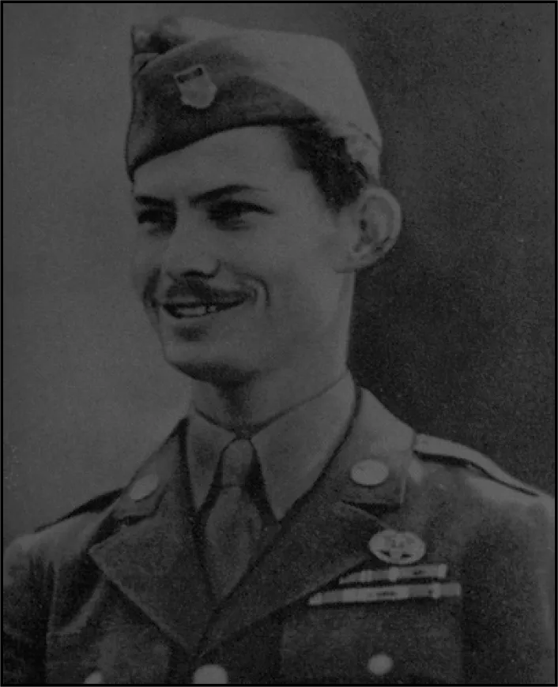
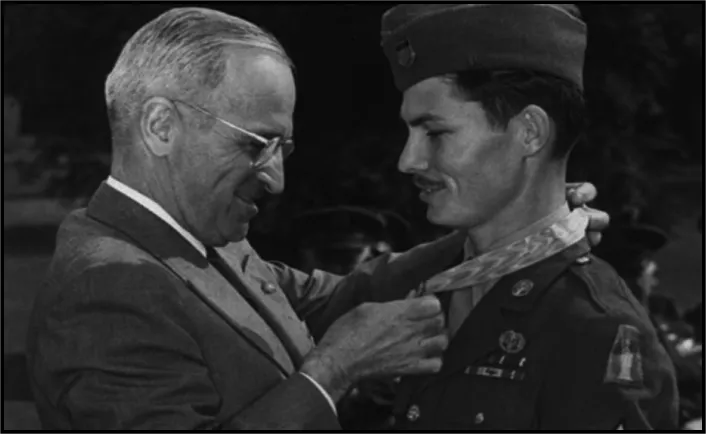

Tu ne tueras point
Six, c’est le nombre de catégories dans le quel il a été nommé au Oscars 2017.
Un chef d’oeuvre.
Ce film réalisé par Mel Gibson est sortie en 2016.
Il a en effet été nommé aux oscars de 2017.
En tant que meilleur film, meilleur acteur, et meilleur réalisateur.
Il remportera aussi les récompenses de meilleur mixage de son et meilleur montage.
Mais que ce qui a fait le succès de ce film ?
Et bien c’est le montage, le son mais c’est principalement son réalisme.
puisqu'en effet le film est tiré d’une histoire vraie.
Affiche publicitaire américiane du film
“Tu ne tueras point”
L’objecteur de consience Desmond Doss
Ce film reprend l’histoire du desmon Doss un jeune soldat s’engageant dans l’armée.
Née le 7 février 1919, vivant avec, sa mère, son frère.
Et son père violent et alcoolique ayant subi la Première Guerre mondiale.
Par raison religieuse, le jeune soldat Desmon Doss ne souhaite pas porter d’arme.
Il se forme donc en tant que médecin pour le terrain.
Sous le regard défiant de son bataillon qu’il se rend à Okinawa au Japon.
Durant la guerre du Pacifique, il se retrouve donc au Japon en juin 1945 sans arme au milieu de la guerre.
Le but qui se fixe est de ne pas laisser de soldat mourir au front.
Il va alors avec corps et âme sauver la vie du maximum de soldats possible.
Qu’il soit un allié ou un ennemi, il sauvera tout le monde.
Soldat Desmond Doss
Une vie après la guerre.
Il reviendra auprès de sa famille en tant que héros de guerre.
Décoré de plusieurs médailles dont la médaille d’honneur, la plus haute aux États-Unis.
Plusieurs personnes ont voulu adapter son histoire en film mais il a refusé.
C’est en 2004 qu’il se laisse convaincre par un grand réalisateur de films, Mel Gibson.
Avant de mourir en 2006 après 87 années de vie.
Décoration du soldat Desmond Doss,
par Harry Truman
Découvrir :
Mel Gibson